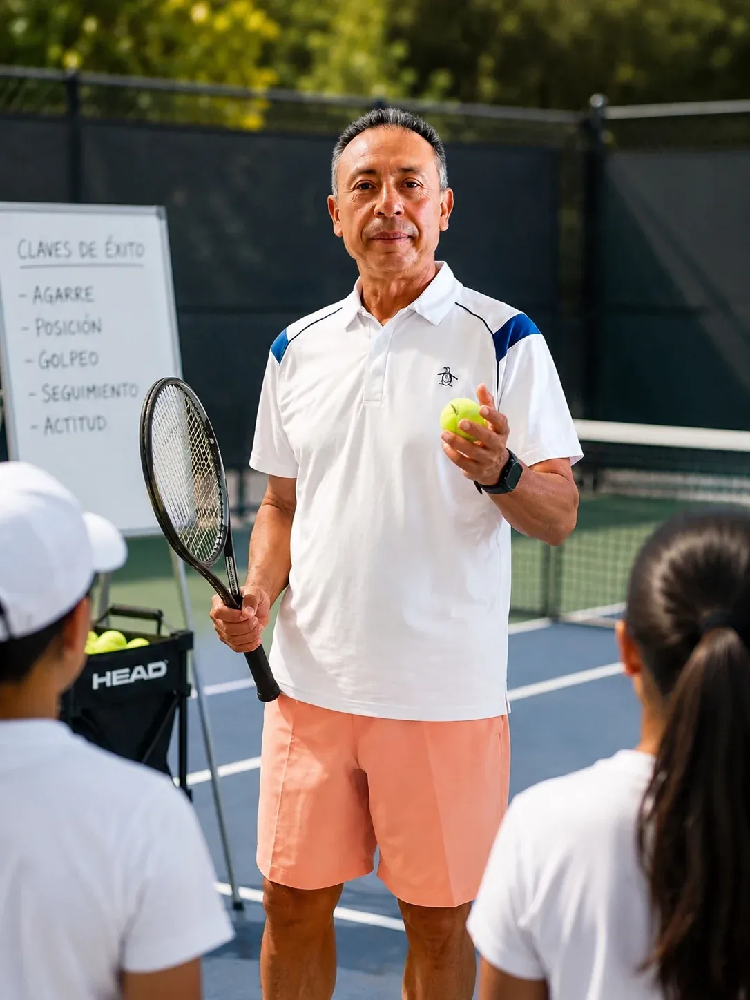

Pedro Palacios
Una formación que une técnica, biomecánica, psicología, ciencias del deporte, ciencias del ejercicio, liderazgo e inteligencia emocional.

Preparación dentro y fuera de la cancha.
Una trayectoria que combina formación para entrenadores, biomecánica, psicología y ciencias del deporte.
1994–1999
Licenciatura en Tecnologías de la Información · Instituto Tecnológico de Tlalnepantla. Especialidad en Redes de Datos y Cableado Estructurado.
1996
Primera etapa de la Especialidad de Entrenador Deportivo · Programa de Capacitación para Entrenadores Deportivos, SEP y Comisión Nacional del Deporte.
Diploma verificado.
2009
Participación en el IV Simposium Casablanca.
Reconocimiento de participación verificado.
2011
Programa de Certificación y Formación Integral para Entrenadores · Nivel 2 Jugadores Avanzados, GTC Tennis Consultancy Inc.
Curso cursado y aprobado; documentos verificados.
2012
7.ª Conferencia Regional de Entrenadores de Centroamérica y el Caribe · ITF, León, Guanajuato.
Asistencia verificada.
2013
ITF Worldwide Coaches Conference · Cancún, México.
Asistencia verificada.
2016
Formación complementaria en biomecánica · Dr. Daria Kopsi.
2020
Formación complementaria en psicología · Universidad de Toronto · Modalidad en línea.
2021
Formación complementaria en ciencias del deporte · Universidad de Colorado · Modalidad en línea.
2023
Innovative Tennis Footwork System · Taller de formación y desarrollo sobre trabajo de pies y biomecánica aplicada al tenis, impartido por Federico Palermo.
Certificado de aprobación verificado.
2023
Formación complementaria en liderazgo transformacional · Universidad de Santander, Querétaro.
2025
Formación complementaria en psicología deportiva · CIL LATAM, Colombia.
2025
Formación complementaria en inteligencia emocional · UBITS.
2025
Curso Science of Exercise · University of Colorado Boulder.
El entrenamiento busca desarrollar técnica, comprensión del movimiento, concentración, confianza y mejores decisiones dentro de la cancha.